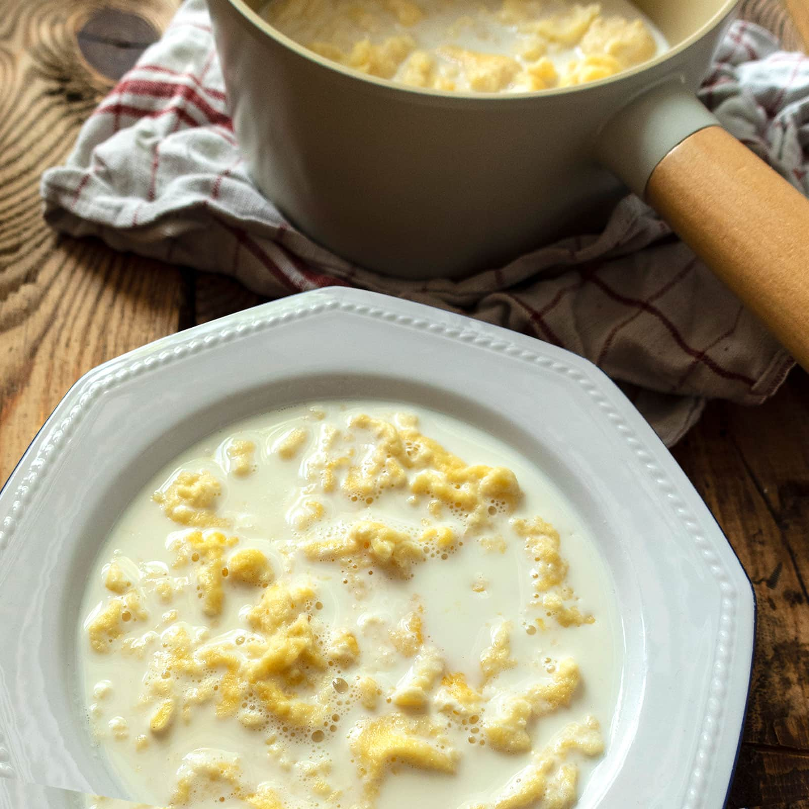
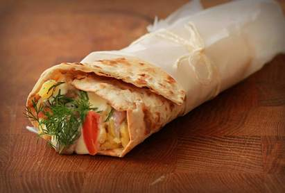
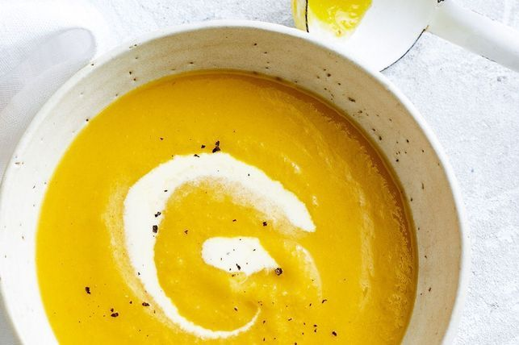
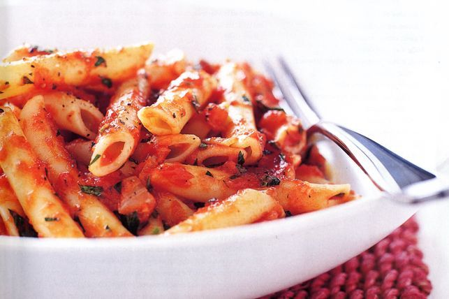
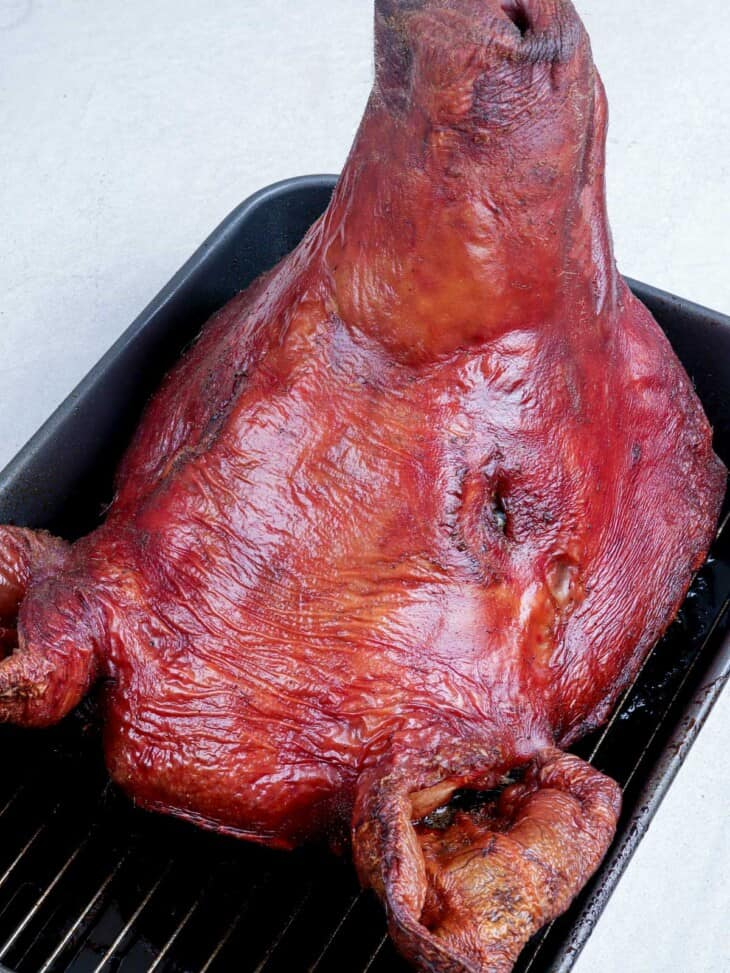

| Dish name | Rating | Recipe link | Photo | |
|---|---|---|---|---|
| No. 1 | Milk Soup | 1/10 | Press here to open |  |
| No. 2 | Flat Bread Surstromming | 1/10 | Press here to open |  |
| No. 3 | Pumpkin Soup | 2/10 | Press here to open |  |
| No. 4 | Pasta With Simple Tomato Sauce | 3/10 | Press here to open |  |
| No. 5 | Pig's Head | 1/10 | Press here to open |  |